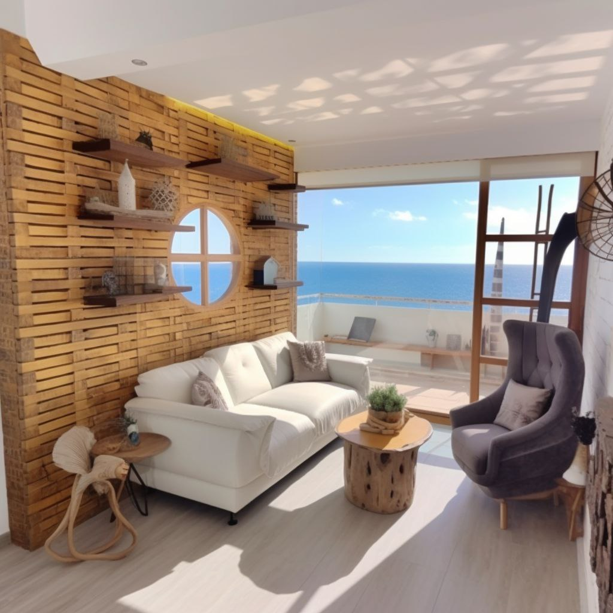

Advantages of Buying Renovated Real Estate

20 тезисов, рассказывающих о преимуществах выкупа и реновации недвижимости, а также о том, почему это интересно вашим клиентам:
- "Возможности для инвестиций: почему выкуп и реновация недвижимости - выгодное решение"
- "Восстановление потенциала: превращаем старое в новое"
- "Получите уникальную недвижимость: персонализация и адаптация под ваши потребности"
- "Эксклюзивные возможности: доступ к уникальным объектам, недоступным на первичном рынке"
- "Оптимальное соотношение цены и качества: покупка после ремонта - выгодная сделка"
- "Мгновенное проживание: готовность к заселению после покупки"
- "Оригинальный дизайн: создание стильных и современных интерьеров"
- "Повышение стоимости: восстановление недвижимости как инвестиция в будущее"
- "Удобство и комфорт: обновленная и функциональная планировка"
- "Сэкономьте время и усилия: не нужно заниматься ремонтом самостоятельно"
- "Надежность и качество: ремонт проводится профессионалами с опытом"
- "Безопасность и гарантии: обеспечение соответствия строительных норм и стандартов"
- "Экологическая безопасность: использование современных материалов и технологий"
- "Получите то, что идеально подходит вам: адаптация недвижимости к вашим предпочтениям и стилю жизни"
- "Привлекательность для арендаторов: обновленная недвижимость привлекает внимание"
- "Легкость сделки: покупка после ремонта упрощает процесс сделки и снижает риски"
- "Преимущества от первоначальных владельцев: обновленная недвижимость не требует дополнительных вложений"
- "Историческая ценность: возрождение и сохранение культурного наследия"
- "Комплексный подход: реновация не только интерьера, но и экстерьера недвижимости"
- "Индивидуальный подход: учтем ваши предпочтения и создадим уникальное жилище"